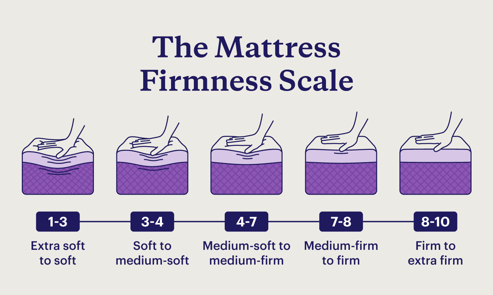

Mattress Firmness and Sleep Quality: What the Research Actually Says

Did you spend three thousand dollars on a mattress because a salesperson told you it would "change your life"?
I'm not judging. I almost did the same thing. It was 2017, I was exhausted from a brutal postdoc schedule, and I convinced myself that my mattress was the problem. Not the sixty-hour work weeks. Not the caffeine at 4 PM. Not the phone in bed until midnight. The mattress. I went to a store, lay on six different beds for about four minutes each, and walked out with a receipt for two thousand four hundred dollars. The mattress arrived. I slept on it. And you know what? I still felt terrible. Because the mattress wasn't the problem.
Here's what the research actually says about mattress firmness and sleep quality. I've read the papers so you don't have to. And I'll tell you the honest truth: most of what mattress companies claim is marketing, not science.
There was a study in 2015 — I think it was from the Journal of Chiropractic Medicine, I'd have to double-check the year — that compared medium-firm mattresses to firm mattresses. They put people on each type for a month and measured pain, sleep quality, and morning alertness. The medium-firm mattresses performed better on every metric. Not by a huge margin — we're talking ten to fifteen percent better — but consistently better. Firm mattresses caused more back pain and more nighttime tossing. Soft mattresses caused more hip pain and made it harder to change positions.
Another study, from 2018, looked at mattress age. People sleeping on mattresses older than seven years had worse sleep quality than people with newer mattresses, regardless of the type. So if your mattress is old, replacing it might actually help. But you don't need a three-thousand-dollar mattress. A five-hundred-dollar mattress that's medium-firm and less than seven years old will perform about the same as a three-thousand-dollar one in terms of sleep quality.
A guy named Dan was convinced he needed a "smart mattress" that adjusts firmness based on his sleep position. He was about to spend four thousand five hundred dollars. I asked him how old his current mattress was. "Nine years," he said. I told him to buy a medium-firm mattress from Costco for six hundred dollars and spend the remaining three thousand nine hundred on something useful, like blackout curtains, a white noise machine, and maybe a vacation. He bought the six-hundred-dollar mattress. His sleep improved. He sent me a message: "I feel stupid for almost spending four thousand five hundred."
The truth is, most people don't need a special mattress. They need to fix their sleep hygiene. But mattress companies don't make money by telling you to put your phone away. They make money by selling you a four-thousand-dollar bed.
That said, there are people who genuinely need a specific mattress. If you have chronic back pain, if you have a spinal condition, if you're a side sleeper with broad shoulders — those people might benefit from a targeted mattress. But for the average person, medium-firm is fine.
Before you spend any money on a mattress, take the sleep quality quiz. Because if your score is low because you're drinking coffee at 6 PM or scrolling TikTok until midnight, a new mattress won't fix that.
Take that quiz. If your score is below sixty and your mattress is less than five years old, the mattress is almost certainly not the problem. Fix your bedtime consistency, your caffeine intake, your light exposure. Those are free. If you've done all that and you're still scoring low, then maybe look at the mattress.
I also want to talk about pillow height. This matters more than most people realize. If you sleep on your side, you need a taller pillow to fill the gap between your ear and your shoulder. If your pillow is too flat, your neck bends down and you wake up with a stiff neck. If it's too tall, your neck bends up and you get the same problem. The right pillow height is exactly the distance from your ear to the edge of your shoulder. For most people, that's four to six inches.
Back sleepers need a flatter pillow, maybe two to three inches. Stomach sleepers need almost no pillow — just a thin one to keep the neck neutral. If you're a stomach sleeper and you use a thick pillow, you're basically sleeping with your head twisted to the side. That's a recipe for pain.
A woman named Amy woke up with headaches every morning. She thought she had a sinus problem. Turned out her pillow was eight inches tall and she was a side sleeper with narrow shoulders. She switched to a four-inch pillow. Headaches gone. Cost her thirty dollars.
Now, let's talk about mattress toppers. These are a cheaper alternative to buying a new mattress. If your mattress is too firm, a two-inch memory foam topper can make it feel medium-firm. If it's too soft, you're out of luck — you can't make a soft mattress firmer with a topper. You'd need a new mattress. But a topper is a good option if your mattress is otherwise fine but just a little off.
One study I remember — I think it was from 2016, maybe at the University of Pittsburgh — tested mattress toppers on college students. The students reported better sleep quality after adding a topper, but the effect faded after about six months. So toppers are a temporary fix, not a long-term solution.
What about mattress materials? Memory foam versus latex versus innerspring. Here's the honest answer: it doesn't matter for most people. Each material has pros and cons. Memory foam sleeps hot. Latex is bouncy. Innerspring wears out faster. But none of them are consistently better in studies. The biggest predictor of satisfaction is whether the mattress is medium-firm and whether it's less than seven years old.
I've slept on all three. I currently have a latex mattress. I like it because it's cooler than memory foam and bouncier than innerspring. But I slept fine on my previous memory foam mattress too. The only reason I switched was that the memory foam started sagging after eight years.
If you're wondering whether your mattress is the problem, try this experiment. Sleep on a different bed for three nights. A guest bed. A hotel. A friend's couch. If you sleep better on the other bed, maybe your mattress is the issue. If you sleep the same or worse, it's not the mattress.
I did this once when I was convinced my mattress was too soft. I slept on my husband's side for three nights — he has a firmer mattress because he's a back sleeper. I felt exactly the same. So I kept my mattress.
Now, let me address a common question: "Should I buy a mattress online or in a store?" Online is cheaper. But you can't try it first. Most online mattress companies have a trial period — a hundred nights or so. That's a good deal. But you have to actually use the trial. If you don't like it after thirty days, return it. Don't keep it just because returning is a hassle. A client of mine kept a mattress he hated for three years because he didn't want to deal with the return. That's three years of bad sleep. For what? A few hours of inconvenience?
In-store, you can try the mattress. But lying on it for five minutes in a showroom doesn't tell you much. You need to lie on it for at least twenty minutes, in your normal sleep position, with your eyes closed. The salesperson will think you're weird. That's fine. It's your money.
Also, never pay full price for a mattress. The markup is insane — like fifty to seventy percent. There's always a sale. If there's not a sale, wait a week. There will be a sale.
I want to bring up sleep debt again, because I see people chasing expensive fixes while ignoring the basics. You can have the best mattress in the world, but if you're sleeping five hours a night, you're going to feel terrible. Mattresses don't erase sleep debt.
Use the debt tracker. If your debt is more than five hours per week, that's your problem. Not the mattress. Pay down the debt first. Then, if you're still uncomfortable, look at the mattress.
One more thing: mattress protectors. Get one. Even a cheap one. Because sweat, skin cells, and dust mites accumulate over time. A protector keeps your mattress clean and can add years to its life. And it's easier to wash a protector than to clean a mattress.
I used to think mattress protectors were for people who wet the bed. Then I saw what was under my old mattress after five years. Never again.
Finally, let's talk about the bedtime finder again, because finding the right bedtime is free and more effective than any mattress.
I've seen people transform their sleep just by shifting their bedtime thirty minutes. No new mattress. No fancy pillows. Just alignment with their circadian rhythm. That's free. Start there.
Here's my bottom line on mattresses. Buy a medium-firm mattress that's less than seven years old. Spend five hundred to a thousand dollars. Don't fall for marketing gimmicks like "cooling gel" or "zoned support" — those features have very weak evidence. If you have specific pain, talk to a physical therapist, not a mattress salesperson. And for the love of god, don't spend four thousand dollars on a mattress while drinking coffee at 6 PM and scrolling your phone in bed.
P.S. I asked my husband what he thinks about our mattress. He said "it's fine." That's the most glowing review he's ever given anything. He also said "please stop talking about mattresses at dinner." So this will be my last mattress post for a while.